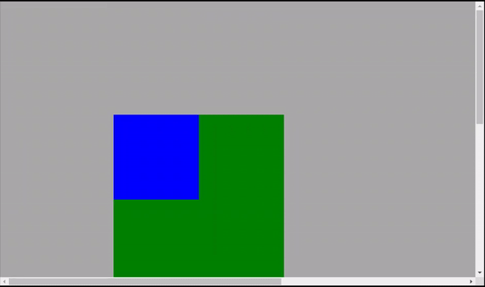

Propiedad de posicion
Position significa posición en español. El posicionamiento predeterminado de cada elemento en HTML es estático, o sea, tiene la posición de valor: static, incluso si este valor no ha sido declarado. Todo elemento estático se coloca alineado con la parte superior izquierda en el cuerpo del documento. No se puede cambiar su posición. Esta es la posición 0 de un elemento en el cuerpo del documento, según las coordenadas HTML.
¿Cómo puedo cambiar la posición de un elemento?
Para cambiar la posición de un elemento, primero debemos modificar su valor por defecto: static. Para la propiedad position, es posible asignar 5 valores, que son: static, fixed, sticky, relative y absolute.
Al cambiar la Position, también podemos usar otras cuatro propiedades auxiliares que son: top, bottom, left y right. Solo position static ignora el valor de estas propiedades. Se pueden utilizar con todos los demás tipos de positions lo que permite definir la posición de un elemento. Las referencias superior, inferior, izquierda y derecha pueden cambiar según el tipo de position aplicada.
Static:
La posición static es la más utilizada de todas, porque, como se dijo anteriormente, este es el valor que viene por defecto cuando creamos elementos en HTML. Su comportamiento, como su nombre indica, es el de ser estático. El simplemente fluye junto con los otros elementos de la página normalmente, tomando como referencia la parte superior izquierda.
Este elemento no acepta propiedades auxiliares top, bottom, left e right. En el ejemplo de abajo, incluso aplicando el código de posición: static e top: 20px, el elemento no se mueve 20 píxeles de arriba a abajo. Permanece estático siendo alineado en la parte superior izquierda.
See the Pen Untitled by Mauricio Mendoza Cedeño (@Mauricio-Mendoza-Cede-o) on CodePen.
Fixed:
La posición fixed hace que el elemento que tiene esta propiedad no se mueva en la pantalla. Incluso si una página tiene desplazamiento (scroll). Al usar el desplazamiento hacia la izquierda y hacia la derecha, o hacia arriba y hacia abajo, el elemento no se mueve.
Tenga en cuenta que, cuando se aplica bottom: 0 % y right: 5 %, el elemento está a un 0 % de la parte inferior de la pantalla, o sea, pegado en la parte inferior y a un 5 % del lado derecho.
See the Pen Untitled by Mauricio Mendoza Cedeño (@Mauricio-Mendoza-Cede-o) on CodePen.
Sticky:
La posición sticky, que en español significa pegajoso o grudento, es similar a fijo, sin embargo, su diferencia es que, en vez de ser fijo en relación a la pantalla, es fijo en relación al desplazamiento de la página.
Este tipo de posición siempre se usa junto con propiedades auxiliares, ya que necesita una posición de referencia. Abajo es posible comprobarlo. Aplicamos top: 0%; left: 0%, lo que hace que el elemento suba al desplazarse hacia abajo, sin embargo, cuando llega al borde de la parte superior de la pantalla, se “pega”, y lo mismo ocurre con el lado izquierdo, cuando arrastramos la barra de desplazamiento hacia la derecha, el elemento llega al borde de la pantalla del lado izquierdo, aunque, también se “pega” al borde de este lado de la pantalla. El elemento vuelve a su posición inicial cuando volvemos a la barra de desplazamiento como antes.
Relative:
La posición relative, que en español significa relativa, se utiliza cuando queremos cambiar la posición de un elemento con referencia a su posición inicial. Cuando aplicamos esta propiedad a un elemento, este no cambiará de posición, se posicionará en su posición de referencia. Sin embargo, cuando aplicamos top: 50px e left: 50px al elemento, como en el ejemplo abajo, su posición cambia 50 píxeles de arriba a abajo y de izquierda a derecha con respecto a su posición inicial.
See the Pen Untitled by Mauricio Mendoza Cedeño (@Mauricio-Mendoza-Cede-o) on CodePen.
Absolute:
La posición absolute, o posicionamiento absoluto en español , tiene dos comportamientos diferentes. El primero es cuando el elemento con esta propiedad tiene un elemento padre con un valor que no es static. En este caso, tendrá como referencia este elemento padre para ser posicionado. Cada elemento padre que tenga cualquier valor de position, excepto el static, será la referencia para posicionar el elemento hijo absoluto!
El segundo comportamiento es cuando el elemento con position absolute no tiene elemento padre, o este elemento padre tiene una position static. En esta situación, ignorará estos elementos y se posicionará desde la parte superior izquierda del documento, pudiendo incluso superponerlos. O sea, es importante usar el absolute asegurándose de que sea necesario (no que no sea necesario para los otros valores), ya que puede desalinear el diseño de la página.
Para entender en la práctica cómo funciona, tenemos, en el siguiente ejemplo, el elemento padre, que es una caja verde, siendo una position relative, posicionado a 150 píxeles de la parte superior de su posición inicial, y su elemento hijo, que es el caja azul, siendo una posición: absoluta con valores top: 50px e left: 50px. Puede ver que el elemento hijo está en el borde superior del elemento padre como referencia, colocado a 50 píxeles desde la parte superior y 50 píxeles a la izquierda:
See the Pen Untitled by Mauricio Mendoza Cedeño (@Mauricio-Mendoza-Cede-o) on CodePen.
Ya en el siguiente ejemplo, el elemento padre no tiene la position declarada, o sea, el es un position static. Su elemento hijo tiene una position absolute. En este caso, el elemento hijo ignora la posición del elemento padre y se alinea 50 píxeles desde la parte superior e izquierda del documento.
See the Pen Untitled by Mauricio Mendoza Cedeño (@Mauricio-Mendoza-Cede-o) on CodePen.